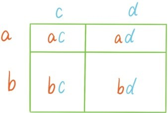

有些关于多项式的代数公式会经常被使用到，而且使用范围远远超出了代数和算术的界限。掌握这些公式，并熟练使用，是后期学习数学的基础。最先登场的是这个公式
(a+b)(c+d)=(a+b)c+(a+b)d=ac+bc+ad+bd。
下图给出了这个公式的一个面积说明。

注意这个公式是根据运算定律推导得到的，所以用任何4个多项式分别替换公式中的a，b，c，d，这个公式永远是成立的。如果分别用a，b，a，b，替换公式中的a，b，c，d，我们就会得到完全平方公式
(a+b)2=a2+2ab+b2。
同样经常使用的是完全平方公式的另一种形式
(a-b)2=a2-2ab+b2。
如果分别用a，b，a，-b替换公式中的a，b，c，d，我们就会得到平方差公式
(a+b)(a-b)=a2-b2。
如果将完全平方公式的两边同时再乘以(a+b)就会得到完全立方公式
(a+b)3=a3+3a2b+3ab2+b3。
如果在完全立方公式中用-b替换b，就会得到完全立方公式的另一种形式
(a-b)3=a3-3a2b+3ab2-b3。
如果将等式右边的-3a2b+3ab2=-3ab(a-b)移到左边，并再次运用分配律，就会得到立方差公式
(a2+ab+b2)(a-b)=a3-b3。
提问时间
3.4.1 推导出关于(a+b)4和(a+b)5的公式。
3.4.2 证明立方和公式：a3+b3=(a+b)(a2-ab+b2)。
3.4.3 请将x2-4和x3-1分解成两个次数更小的多项式的乘积。